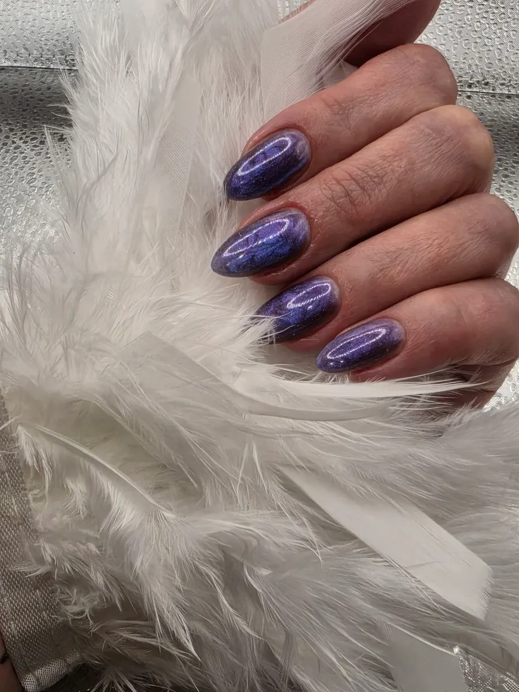
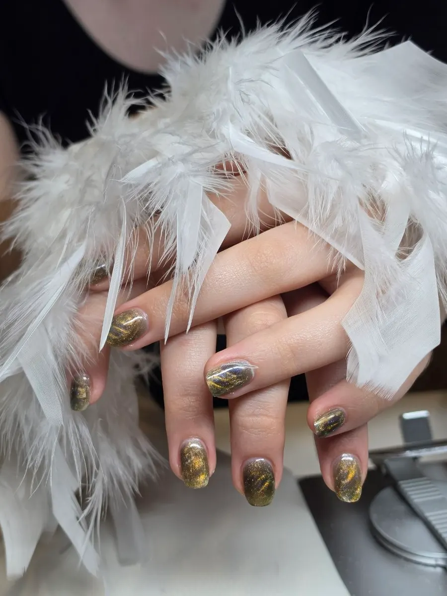

Москва · частный мастер · парикмахер-универсал · колорист
Красота, в которой вы – это вы
От нового оттенка волос до кончиков пальцев. Весь образ в одних руках, без записи к разным мастерам.
- Парикмахер-универсал и колорист
- Волосы, ногти, брови, ресницы и макияж – у одного мастера
- Оттенок подбираю под вашу внешность и стиль
Направления и цены
Цены назову при записи, после того как увижу ваши волосы или руки на фото.
Волосы и цвет
- Стрижкауточнить
- Окрашивание: балаяж, шатушуточнить
- Авторское мелированиеуточнить
- Работа с сединойуточнить
Ногти, брови, ресницы, макияж
- Маникюруточнить
- Педикюруточнить
- Брови: окрашивание и формауточнить
- Ламинирование ресниц и бровейуточнить
- Макияжуточнить
Как проходит запись
- 01
Выбираете направление и время
Форма записи на первом экране.
- 02
Готовое сообщение уходит Татьяне в Telegram
Со всеми выбранными данными, писать заново не нужно.
- 03
Обсуждаете образ
Расскажите, что хочется изменить. Подбираю образ с учётом внешности, стиля и ваших пожеланий.
- 04
Приходите на приём
Адрес и время Татьяна подтвердит в сообщении.


Чем отличается
Весь образ в одних руках
Волосы, цвет, ногти, брови, ресницы и макияж делаю сама.
Частный мастер
Вы записываетесь к конкретному мастеру, а не к тому, кто свободен.
Авторские техники
Балаяж, шатуш, авторское мелирование, работа с сединой.
Образ, в котором комфортно
Подбираю образ с учётом внешности, стиля и ваших пожеланий.
Частые вопросы
Как записаться?
Выберите направление и время в форме на странице: готовое сообщение уйдёт Татьяне в Telegram.
Сколько стоит?
Цену называю при записи, после того как увижу волосы или руки на фото.
Можно сделать несколько услуг за один визит?
Да, например окрашивание и брови. Это и есть идея: весь образ у одного мастера.
Ваш новый образ начинается с разговора
- Адрес
- Москва, адрес сообщу при записи, Москва
- Часы
- По записи